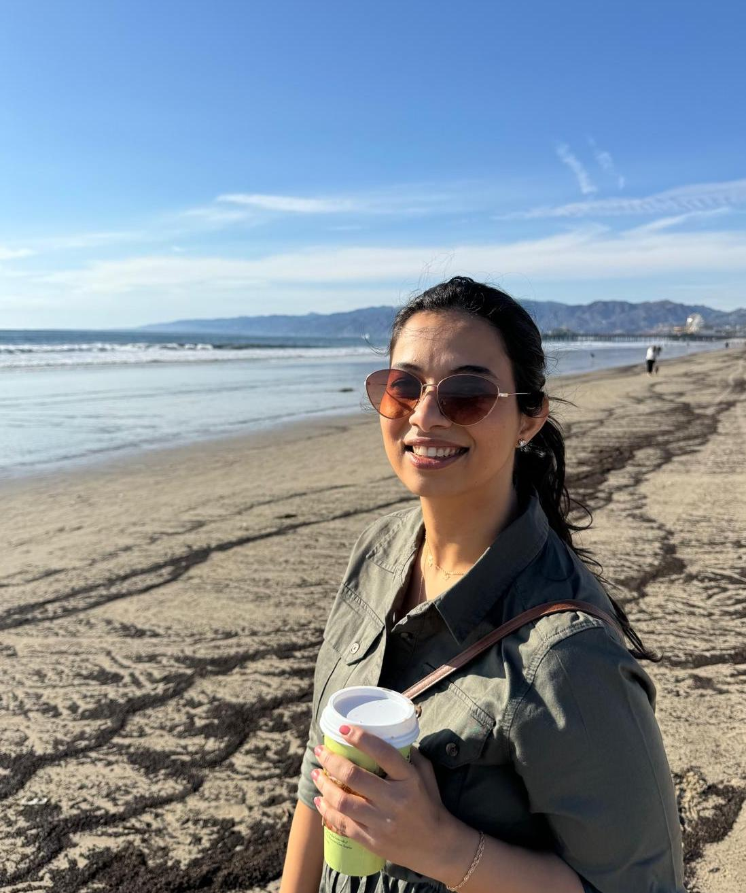

Welcome! I'm Aakanksha
I turn data, user-insights and research into business strategies. Currently building product strategy at ViyaMD supporting healthcare AI.
I possess optimism of a recent graduate - Master's in Business Analytics from Marshall, University of Southern California.
Trained in Physics from (IIT) Indian Institute of Technology, Kharagpur.
email • linkedin • github • resume
Leveraging CMS data, I've analyzed Medicare prescription drug trends, prescriber and beneficiary behavior at national, sate level. Identifying top-impactful generic drugs and visualizing KPIs with year-over-year changes to uncover insights into drug utilization and expenditure.
Dashboard | MediumWe replicate technical analysis of a randomized control trial (RCT) experiment using using Difference-in-Difference approach. Added new element of optimized weekly schedule for a unit worker depending on team and inidvidual dynamic factors. Productized as a worker management extention for current HR tools.
GitHubA primary research intiaitve to understand adoption of AI among graduate students and share recommendations for program administrators and educators. I attempt to see what AI sub - use cases and LLMs are popular among students and why?
MediumWe use web-scraping (SerpAPI), OpenAI LLMs and a scrapy dashboard (Sreamlit) to create this AI system of multiple agents and function calls for a lead reachout automation.
GitHub | Loom VideoI love giving gifts but finding them is a tough challenge. Trying to solve this. The idea hopes to develop a recommendation assistant or tool to do the job of finding thoughtful gifts for users.
Working with business and technical teams together, brought architecture choice a recurring question. I write about different types of agentic frameworks and ideas that help narrow down the choices.
MediumI analyze how consolidating 30 scholarship programs in a state can improve beneficiary outcomes and administrative efficiency. This proposal was submitted to Stanford's Hoover Institution Policy Camp as part of my selection to the residential program for 100 global changemakers, receiving 2022 Distinction Honors - recognition for innovation in welfare program design.
PDF